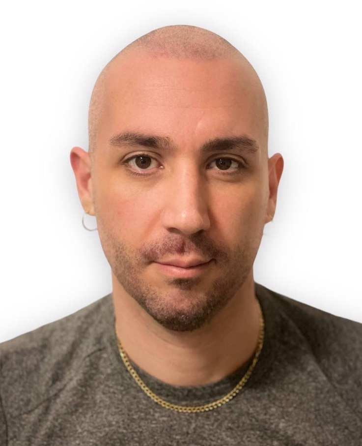

Quiénes somos
Jaume Cuadrada
Estudiante de desarrollo web en ISDI Coders Barcelona, vivo en Mataró. Me gusta el baloncesto, las criptomonedas y nfts. Vivo con dos preciosos gatos
Inge Heeringa

Soy estudiante de desarrollo web en ISDI Coders Barcelona, donde vivo desde el 2015. Me gusta leer, pasear por la playa y visitar museos. Vivo con mi pareja y dos gatos.